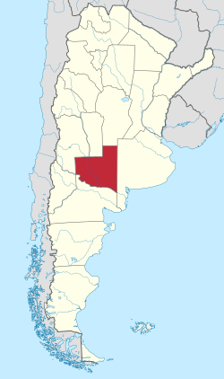
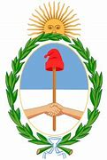
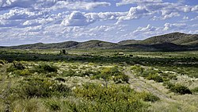
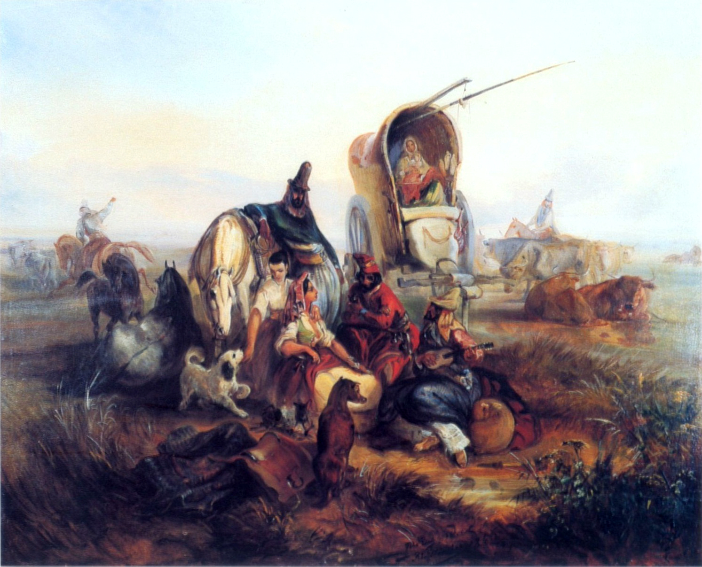
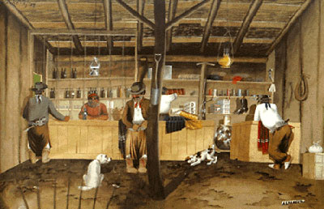

The Gaucho Chamber of Commerce
Home
Discover
Directory
Join
Images of La Pampa, Argentina

La Pampa Province

Coat of Arms, La Pampa, Argentina

The Lihué National Park
City of Santa Rosa

Gauchos Resting in the Pampas by Rugendas

Pampean Gauchos